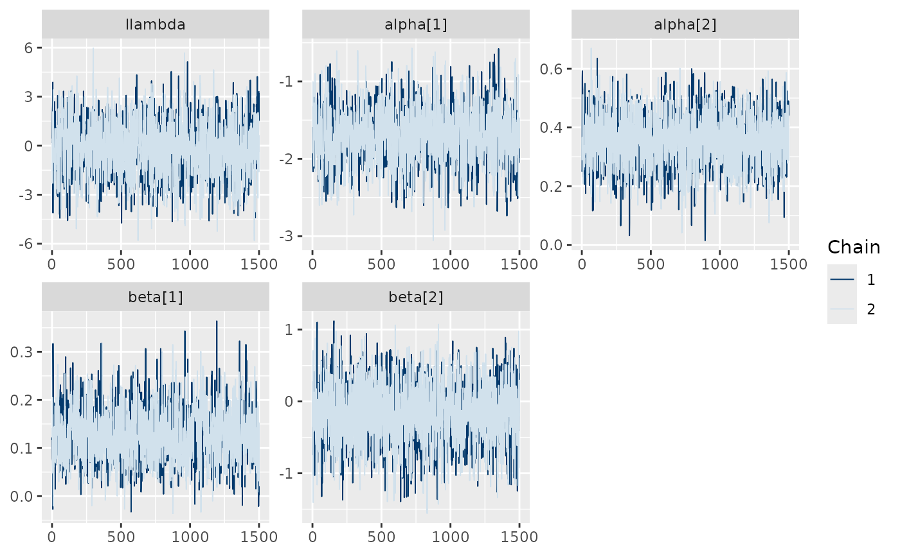
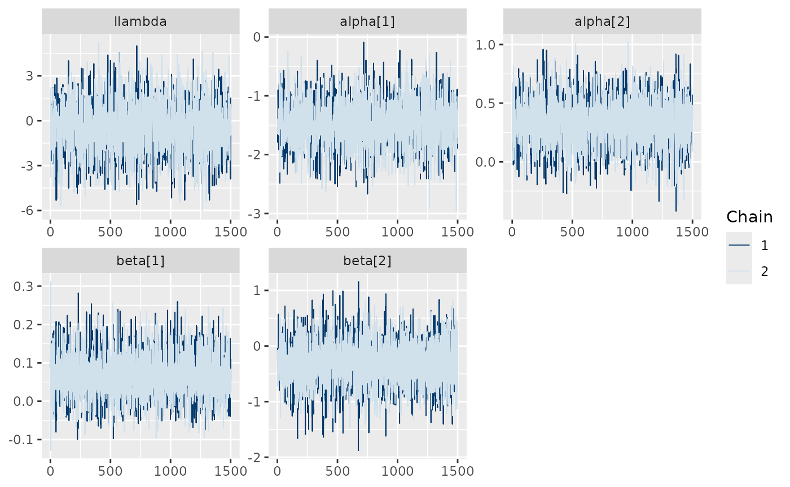

library(MortalMove)
library(cmdstanr)
#> This is cmdstanr version 0.9.0.9000
#> - CmdStanR documentation and vignettes: mc-stan.org/cmdstanr
#> - Use set_cmdstan_path() to set the path to CmdStan
#> - Use install_cmdstan() to install CmdStan
set_cmdstan_path("YOUR_CMDSTAN_PATH") # Set your cmdstan path here
#> Warning: Path not set. Can't find directory: YOUR_CMDSTAN_PATHSimulating data
sim <- simulate_data(n_animals = 100, n_fixes = 200, n_dead = 20, n_knots = 25)
sim[["raw_data"]] <- NULL
sim[["ind_cell_effect"]] <- 0Fit stan model using cmdstan
model_file <- system.file("stan/mortality_model.stan", package = "MortalMove")
mod <- cmdstan_model(model_file, exe_file = system.file("stan/mortality_model.exe", package = "MortalMove"))
fit <- mod$sample(
data = sim,
chains = 2,
parallel_chains = 2,
iter_warmup = 500,
iter_sampling = 1500,
seed = 123
)Check diagnostics
diagnostic_fit(fit, plot = TRUE, observed_y = rowSums(sim$time_step, na.rm = TRUE), delta = sim$delta)
#> This is posterior version 1.6.1
#>
#> Attaching package: 'posterior'
#> The following object is masked from 'package:FNN':
#>
#> entropy
#> The following objects are masked from 'package:stats':
#>
#> mad, sd, var
#> The following objects are masked from 'package:base':
#>
#> %in%, match
#> This is bayesplot version 1.14.0
#> - Online documentation and vignettes at mc-stan.org/bayesplot
#> - bayesplot theme set to bayesplot::theme_default()
#> * Does _not_ affect other ggplot2 plots
#> * See ?bayesplot_theme_set for details on theme setting
#>
#> Attaching package: 'bayesplot'
#> The following object is masked from 'package:posterior':
#>
#> rhat
#> This is loo version 2.8.0
#> - Online documentation and vignettes at mc-stan.org/loo
#> - As of v2.0.0 loo defaults to 1 core but we recommend using as many as possible. Use the 'cores' argument or set options(mc.cores = NUM_CORES) for an entire session.
#> # A tibble: 5 × 5
#> variable mean sd q5 q95
#> <chr> <dbl> <dbl> <dbl> <dbl>
#> 1 beta[1] 0.130 0.0548 0.0468 0.223
#> 2 beta[2] -0.169 0.422 -0.882 0.519
#> 3 alpha[1] -1.71 0.348 -2.26 -1.13
#> 4 alpha[2] 0.354 0.0887 0.208 0.496
#> 5 llambda -0.195 1.67 -3.01 2.49
#>
#> --- Rhat and ESS Summary ---
#> # A tibble: 5 × 4
#> variable rhat ess_bulk ess_tail
#> <chr> <dbl> <dbl> <dbl>
#> 1 beta[1] 1.00 1605. 1934.
#> 2 beta[2] 1.00 2407. 1981.
#> 3 alpha[1] 1.00 1558. 1634.
#> 4 alpha[2] 1.00 2055. 1564.
#> 5 llambda 1.00 1634. 1593.
#>
#> Computed from 3000 by 100 log-likelihood matrix.
#>
#> Estimate SE
#> elpd_loo -132.9 25.1
#> p_loo 2.3 0.5
#> looic 265.7 50.1
#> ------
#> MCSE of elpd_loo is 0.0.
#> MCSE and ESS estimates assume independent draws (r_eff=1).
#>
#> All Pareto k estimates are good (k < 0.7).
#> See help('pareto-k-diagnostic') for details.
#>
#> Posterior predictive p-value summary:
#> variable p_value
#> 1 Failed 0.3000
#> 2 Censored 0.7125
bayesplot::mcmc_trace(fit$draws(c("llambda","alpha","beta")))
Fit with spatial autocorrelation
# Fit with spatial autocorrelation
sim[["ind_cell_effect"]] <- 1
model_file <- system.file("stan/mortality_model.stan", package = "MortalMove")
mod <- cmdstan_model(model_file, exe_file = system.file("stan/mortality_model.exe", package = "MortalMove"))
# run fewer iterations due to time constraint
fit_spat <- mod$sample(
data = sim,
chains = 2,
parallel_chains = 2,
iter_warmup = 500,
iter_sampling = 1500,
seed = 123
)
diagnostic_fit(fit_spat, plot = TRUE, observed_y = rowSums(sim$time_step, na.rm = TRUE), delta = sim$delta)
#> # A tibble: 5 × 5
#> variable mean sd q5 q95
#> <chr> <dbl> <dbl> <dbl> <dbl>
#> 1 beta[1] 0.0697 0.0593 -0.0252 0.171
#> 2 beta[2] -0.316 0.416 -0.988 0.355
#> 3 alpha[1] -1.46 0.385 -2.09 -0.828
#> 4 alpha[2] 0.330 0.200 -0.00211 0.656
#> 5 llambda -0.515 1.72 -3.39 2.29
#>
#> --- Rhat and ESS Summary ---
#> # A tibble: 5 × 4
#> variable rhat ess_bulk ess_tail
#> <chr> <dbl> <dbl> <dbl>
#> 1 beta[1] 1.000 5544. 2325.
#> 2 beta[2] 1.00 6495. 2025.
#> 3 alpha[1] 1.00 3214. 2295.
#> 4 alpha[2] 1.000 4593. 2214.
#> 5 llambda 1.00 3087. 2266.
#>
#> Computed from 3000 by 100 log-likelihood matrix.
#>
#> Estimate SE
#> elpd_loo -125.2 24.3
#> p_loo 6.7 1.7
#> looic 250.5 48.6
#> ------
#> MCSE of elpd_loo is 0.1.
#> MCSE and ESS estimates assume independent draws (r_eff=1).
#>
#> All Pareto k estimates are good (k < 0.7).
#> See help('pareto-k-diagnostic') for details.
#>
#> Posterior predictive p-value summary:
#> variable p_value
#> 1 Failed 0.40
#> 2 Censored 0.65
bayesplot::mcmc_trace(fit_spat$draws(c("llambda","alpha","beta")))